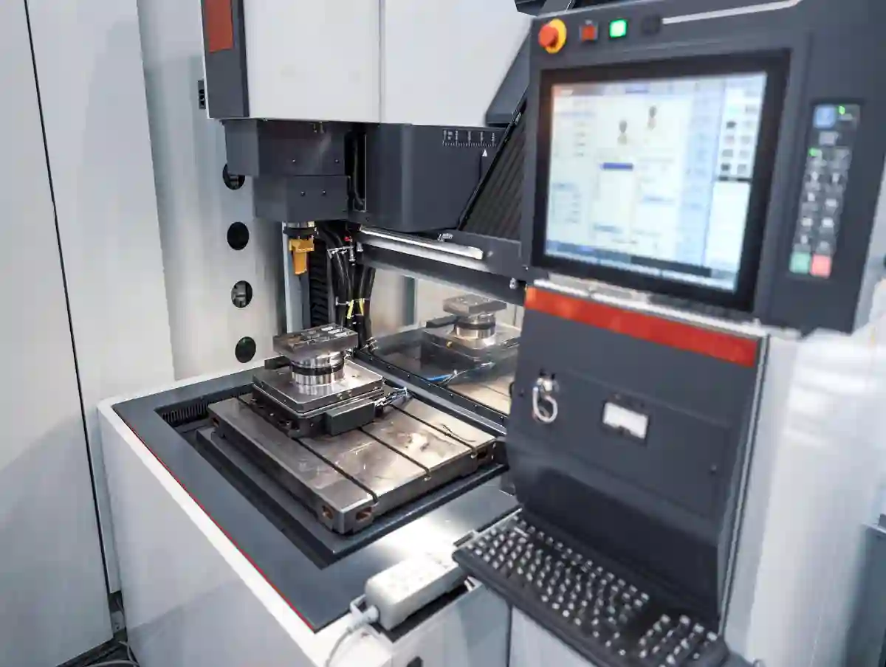
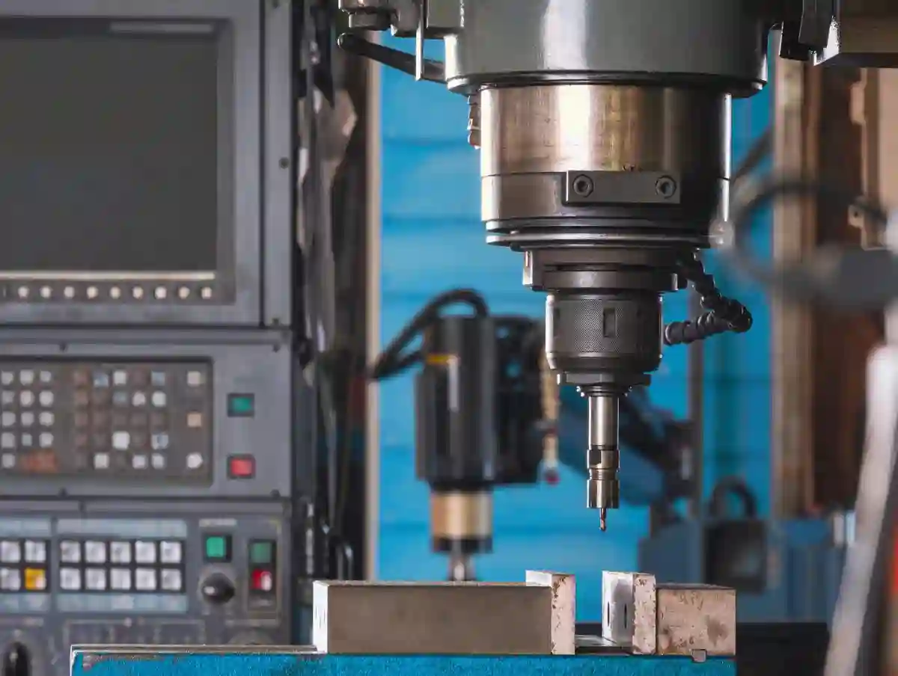
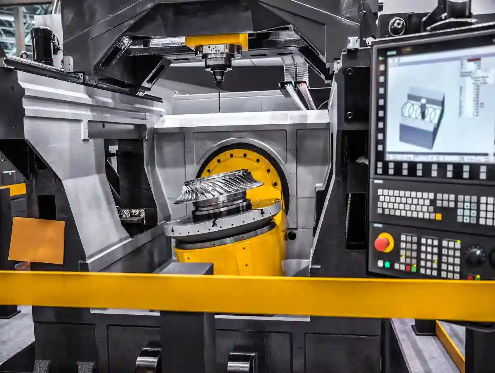
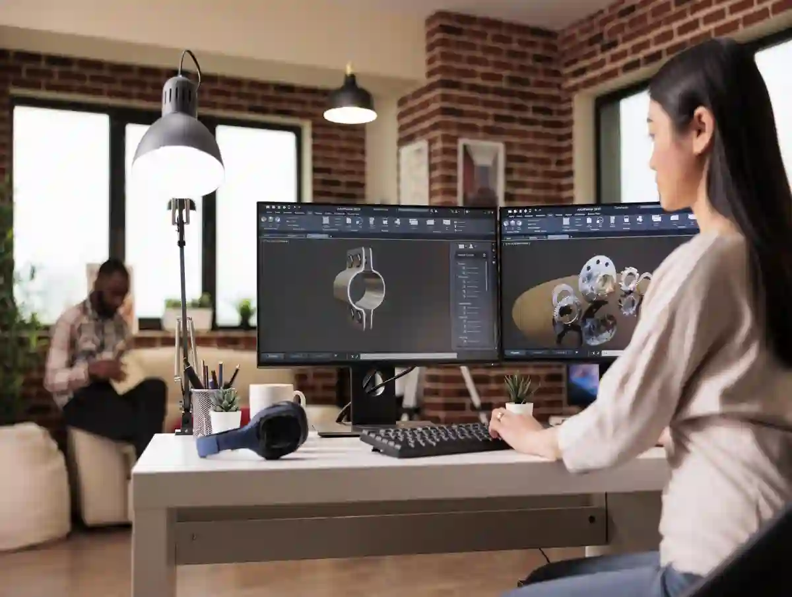
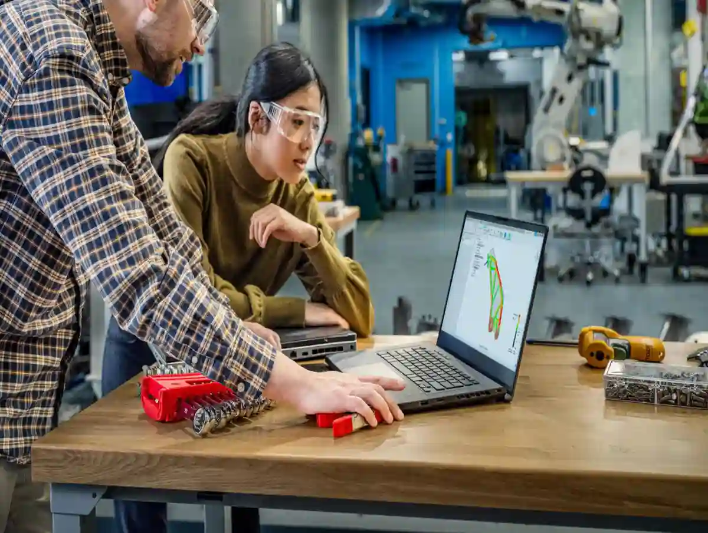

CNC Üretimde CNC CAD CAM Entegrasyonu
CNC üretimde hız, tekrarlanabilirlik ve kaliteyi aynı anda hedeflediğinizde, sahada en çok “görünmeyen” darboğazlardan biri ortaya çıkar: Tasarım dosyası ile tezgâhın başındaki gerçek üretim arasındaki kopukluk. İşte tam bu noktada cnc cad cam entegrasyonu devreye girer. Çünkü CAD ortamında çizdiğiniz geometri, CAM tarafında takım yoluna dönüşmediği sürece sadece “niyet”tir; üretim ise bu niyetin doğru post-prosesörle doğru G-koda dönüşmesiyle başlar.
Birçok işletmede cnc programlama süreçleri; tasarımın e-posta ile gelmesi, operatörün modeli açması, yüzeyleri yeniden tanımlaması, takım seçimi ve bağlama varsayımlarıyla ilerler. Bu iş akışı “çalışır”, fakat ölçü kaçırma riskini ve revizyon maliyetini büyütür. Çünkü revizyon geldiğinde çoğu zaman şunlar yaşanır: modeli yeniden içe aktar, operasyonları yeniden bağla, takımları yeniden seç, post al, simülasyonu yeniden koş. Bu döngü uzadıkça teslim tarihi uzar; daha kötüsü, aynı parça farklı günlerde farklı sonuç verebilir.
Cad cam nedir sorusunu sahadaki gerçekliğiyle cevaplayalım: CAD, parçanın dijital tanımıdır; CAM ise o tanımı, seçtiğiniz tezgâh ve kesici setine göre “işlenebilir” adımlara çeviren üretim zekâsıdır. CAD tarafında ölçü ve toleransı belirlemek, CAM tarafında ise bunu karşılayacak stratejiyi üretmek zorundasınız. Arada kopukluk varsa, tolerans yönetimi “ölçümde yakalarız” yaklaşımına döner; oysa ideal senaryoda tolerans, daha takım yolu yazılırken yönetilir.
Aymaksan’ın üretim kültüründe bu entegrasyonun pratik karşılığı şudur: Parça daha tezgâha bağlanmadan önce, bağlama yönü, referans yüzeyler, sıfır noktası (work offset), takım boyları, operasyon sırası ve ölçüm planı birlikte düşünülür. Bu nedenle, proses tarafında daha geniş bir çerçeve görmek için Blog – Talaşlı İmalat, CNC Üretim ve Sanayi Dünyasından Güncel İçerikler yaklaşımını “hub” gibi okumak gerekir. (Blog ana sayfa içinde ilgili yazı listeleniyor.)
CNC CAD CAM Entegrasyonu Neden Artık “Opsiyon” Değil?
Cnc cad cam entegrasyonu artık sadece büyük işletmelerin değil, proje bazlı çalışan KOBİ’lerin de rekabet avantajı. Sebebi basit: Parça geometrileri karmaşıklaştı, toleranslar daraldı, teslim pencereleri kısaldı. Üstelik müşteri revizyonu “normalleşti”. Entegrasyon; revizyonu bir felaket olmaktan çıkarıp yönetilebilir bir akışa dönüştürür.
- CAD’de model değişir → CAM’de operasyonlar parametrik bağlıysa takım yolları güncellenir
- Post-prosesör doğruysa → tezgâh dili hatasız üretilir
- Simülasyon/çarpışma kontrolü doğruysa → tezgâh üzerinde sürpriz azalır
- Standart takım kütüphanesi varsa → süre tahmini ve maliyet daha stabil olur
Bu, özellikle hassas parçalarda kritik. Tolerans sapmalarının kaynaklarını anlamak için CNC Üretimde Tolerans ve Hassasiyet Yönetimi rehberindeki yaklaşım, CAD/CAM akışının “neden ölçüm kadar önemli” olduğunu netleştirir.

CNC Üretimde Dijital Tasarım İle Üretim Arasındaki Köprü
CNC üretimde dijital tasarım sadece “3D model çizmek” değildir. Dijital tasarım; üretilebilirlik kararlarının (DFM) tasarım aşamasına taşınmasıdır. Örneğin bir iç köşe radyüsü, CAD’de “güzel görünür”; CAM’de ise takım çapını ve erişimi kilitler. Bu yüzden tasarım ekibi ile üretim ekibi aynı dili konuşmak zorundadır. İşte cnc cad cam entegrasyonu bu dili standartlaştırır.
Entegrasyonun en pratik çıktılarından biri: “tek kaynak doğruluk” (single source of truth). Parçanın hangi revizyonda olduğu, hangi işleme stratejisinin uygulandığı ve hangi ölçüm raporunun o revizyona ait olduğu netleşir. Bu netlik; kalite kayıtlarını, izlenebilirliği ve müşteri iletişimini de iyileştirir.
Cad Cam Nedir?
Cad cam nedir? CAD (Computer Aided Design), parçanın ölçüsel ve geometrik tanımını dijital ortamda oluşturma sürecidir. CAM (Computer Aided Manufacturing) ise bu dijital tanımı; takım seçimi, operasyon sırası, kesme parametreleri ve post-prosesör aracılığıyla CNC tezgâhın çalıştıracağı G-koda dönüştürme sürecidir. Bu iki katman birlikte çalıştığında cnc cad cam entegrasyonu sağlanır.
CNC CAD CAM Entegrasyonu Akışı: Modelden Tezgâha (Uçtan Uca)
Sahada “entegrasyon” denince çoğu kişi sadece dosya aktarımını düşünür. Oysa cnc cad cam entegrasyonu; veri, kural ve standardın birlikte yönetilmesidir. Uçtan uca akış tipik olarak şu katmanlardan oluşur:
- CAD modeli + teknik resim + toleranslar
- CAM operasyonları (strateji, takım, bağlama, sıfır)
- Post-prosesör + tezgâh kontrol dili (Fanuc/Siemens vb.)
- Simülasyon + çarpışma kontrolü (takım/bağlama/tabla dahil)
- Tezgâh üzerinde ilk parça doğrulaması + proses içi ölçüm
Bu akışın en kritik iki “hata üretme” noktası: post-prosesör ve takım/bağlama varsayımlarıdır. CAD’de her şey doğru olabilir; ancak CAM’de yanlış takım boyu veya yanlış referans seçimi, tezgâhta bambaşka bir sonuç doğurur. Bu nedenle cnc programlama süreçleri sadece yazılım ekranında değil, atölye gerçekliğiyle birlikte kurgulanmalıdır.

Post-Prosesör Neden En Kritik Halkadır?
Post-prosesör; CAM’in ürettiği takım yolunu, tezgâhın anlayacağı komutlara çevirir. Burada yapılan küçük bir ayar hatası bile (örneğin dairesel enterpolasyon formatı, takım telafisi yaklaşımı, G43/G49 yönetimi) yüzey kalitesini veya ölçüyü etkileyebilir. Bu yüzden cnc cad cam entegrasyonu sadece “hangi CAM’i kullanıyoruz” değil, “hangi tezgâha nasıl post alıyoruz” sorusunu da içerir.
Aymaksan gibi farklı operasyonları aynı çatı altında yöneten yapılarda, tezgâh kabiliyeti ile CAM stratejisinin uyumu daha da önemlidir. Örneğin dik işleme tarafındaki yaklaşımı görmek için CNC Frezeleme ve Dik İşleme sayfasındaki proses disiplini, CAD/CAM kararlarının neden “tezgâh gerçekliği” ile birlikte alınması gerektiğini destekler.
CNC CAD CAM Yazılımları Seçiminde Teknik Kriterler
Cnc cad cam yazılımları seçerken “arayüz kolaylığı” genellikle ilk konuşulan konudur. Sahada ise asıl belirleyici kriterler şunlardır:
- Parça tipiniz: prizmatik mi, serbest form mu, çok eksenli mi?
- Takım kütüphanesi + kesme verisi yönetimi var mı?
- Revizyon yönetimi: operasyonlar modele parametrik bağlı mı?
- Simülasyon derinliği: sadece takım yolu mu, bağlama/tabla da dahil mi?
- Post-prosesör ekosistemi: tezgâhınıza uygun, sürdürülebilir mi?
- Ölçüm entegrasyonu: proses içi kontrol için raporlama disiplini kurulabiliyor mu?
Bu kriterler, “bir yazılım alıp kullanmak”tan çok daha öte; işletmenin cnc programlama süreçleri olgunluğunu belirler. Eğer takım kütüphanesi standart değilse, aynı parçanın çevrim süresi her operatörde değişir. Eğer post kütüphanesi kontrolsüzse, tezgâh başında “kod düzeltme” alışkanlığı oluşur ve izlenebilirlik bozulur.
CNC CAD CAM Yazılımları Nasıl Seçilir?
Cnc cad cam yazılımları; parça geometrisi, tezgâh tipi, post-prosesör uyumu, simülasyon yetkinliği ve revizyon yönetimi kriterlerine göre seçilmelidir. En doğru seçim, CAD’den CAM’e değişikliklerin otomatik aktarılabildiği ve tezgâh çıktısının standartlaştırılabildiği sistemdir.
CNC CAD/CAM Yazılımları Örnekleri
Atölye ölçeği, parça tipi ve tezgâh kontrolü ne olursa olsun, doğru yazılım seçimi “liste ezberlemekten” çok, akışı uçtan uca yönetmektir. Çünkü cnc cad cam yazılımları aynı işi yapıyor gibi görünse de; post-prosesör ekosistemi, simülasyon derinliği, takım kütüphanesi yönetimi ve çok eksenli stratejilerde ciddi farklar üretir. Dünyada CAM tarafında en yaygın referanslardan biri Mastercam’dır; bağımsız araştırma firması CIMdata’ya dayandırılan açıklamalarda uzun yıllardır en yaygın kullanılan CAM olarak konumlanır.
Küçük-orta ölçekli işletmeler ve prototipleme tarafında Autodesk Fusion (Fusion 360) çok tercih edilir; tek platformda CAD+CAM entegrasyonu ve bulut temelli iş akışı ile öne çıkar. Kurumsal tarafta Siemens NX; CAD/CAM bütünlüğü, kompleks montaj ve üretim senaryolarında yaygın kullanımıyla güçlü bir alternatiftir. CATIA, özellikle havacılık/otomotiv gibi büyük montaj ve yüzey modelleme isteyen yapılarda; PTC Creo ise parametrik tasarım ve kurumsal PLM ekosistemiyle sık görülür. SOLIDWORKS + CAMWorks/SolidCAM kombinasyonu, Türkiye’de de dahil olmak üzere çok yaygın “tasarım merkezli” akışlarda sık tercih edilir.
Türkiye özelinde sahada sık karşılaşılan CAM paketleri arasında SolidCAM, Edgecam, Siemens NX, Esprit, Fusion 360, Mastercam gibi çözümler öne çıkar; eğitim ve işgücü piyasası alışkanlıkları da bu dağılımı etkiler. Seçimde kritik soru şudur: cad cam nedir sorusuna yalnız tanım değil, “revizyon geldiğinde ne kadar hızlı güncellerim?” cevabını verebiliyor musunuz? İyi bir sistem; cnc programlama süreçleri içinde takım kütüphanesini, bağlama varsayımlarını ve post ayarlarını standarda bağlar. Böylece cam yazılımı ile cnc üretim sırasında tezgâh başı sürprizleri azalır ve çevrim süresi daha öngörülebilir hale gelir.
Ayrıca aynı işletmede farklı kullanıcılar çalışsa bile sonuçlar birbirine yaklaşır; bu da kalite kayıtlarını ve izlenebilirliği güçlendirir. En pratik yaklaşım; 2–3 aday yazılımı aynı örnek parça üzerinde (kaba+finiş+delik grubu) deneyip; post çıktısı, simülasyon gerçekçiliği ve revizyon güncelleme hızına göre karar vermektir. Bu test, pazarlama vaatlerinden daha hızlı doğruyu gösterir.
Cam Yazılımı ile Cnc Üretim: Strateji, Takım Yolu ve Yüzey Kalitesi
Cam yazılımı ile cnc üretim tarafında kaliteyi belirleyen şey, “takım yolunu çıkarmak” değil, doğru stratejiyi seçmektir. Aynı geometriyi farklı stratejilerle işlersiniz; biri hızlıdır ama titreşim üretir, diğeri yavaştır ama yüzeyi stabilize eder. Bu nedenle cnc cad cam entegrasyonu, kalite hedefini CAM’in içine gömer.
Örnek: İnce cidarlı bir parça düşünün. CAD’de nominal ölçüler doğru; fakat CAM’de kaba talaş kaldırma stratejisi agresif seçilirse deformasyon artar. Sonuç: ölçü kaçar. Bu durumda CAM tarafında adaptif kaba, kontrollü paso, uygun kesme yönü ve doğru bağlama ile “deformasyonu yönetmek” gerekir.

Takım Seçimi ve Takım Kütüphanesi Standardı
Takım kütüphanesi standardı olmayan işletmelerde, aynı parçanın süre tahmini her seferinde değişir. Oysa cnc programlama süreçleri olgunlaştıkça, CAM tarafında takım/parametre kütüphanesi “kurumsal hafıza” olur. Böylece yeni gelen operatör, sahada denenmiş kesme değerlerini tekrar üretir.
Burada kritik nokta: Kütüphane “kitap gibi” değil, sahadan beslenen canlı bir sistem olmalı. Hangi malzeme, hangi kaplama, hangi operasyon, hangi soğutma, hangi bağlama? Bu veriler toplandıkça cnc cad cam entegrasyonu gerçek anlamda verimlilik üretir.
Cnc Üretimde Dijital Tasarım İçin DFM Kontrol Listesi
DFM (Design for Manufacturability) kontrolünü “tasarım bittiğinde” yapmak geç kalmak demektir. cnc üretimde dijital tasarım aşamasında aşağıdaki liste, CAD/CAM entegrasyonunu hızlandırır:
- İç köşe radyüsleri takım çapına uygun mu?
- Derin cepler erişilebilir mi; uzun takım gerektiriyor mu?
- Delik toleransı ve yüzey pürüzlülüğü hedefi net mi?
- Referans yüzeyler ve ölçülendirme mantığı üretime uygun mu?
- Bağlama yüzeyleri ve sıkma izleri için alan ayrıldı mı?
Bu listeyi tasarımcı ile üretimci aynı anda okuduğunda, cnc cad cam entegrasyonu bir “yazılım konusu” olmaktan çıkar; süreç yönetimine dönüşür.
CAD/CAM’in Türkiye’deki teknoloji gündeminde de stratejik bir yer tuttuğunu görmek açısından, yerli CAD/CAM ekosistemine dair bu içerik iyi bir referanstır: Yerli CAD/CAM yazılım kütüphanesi geliştirdi.
DFM’de “Kritik Özellik” Haritalama ve Ölçüm Noktaları
DFM kontrol listesini gerçekten işe yaratan şey, kontrol maddelerini “kritik özellik” (CTQ) mantığıyla üretime bağlamaktır. Cnc üretimde dijital tasarım aşamasında her unsur eşit değildir: Bazı yüzeyler yalnız görünüş içindir, bazıları ise yataklama, sızdırmazlık, konumlama veya montaj referansı taşır. Bu yüzden yeni bir H2 olarak önerim; tasarım verisini, ölçüm ve proses kararlarına bağlayan bir harita oluşturmaktır.
İlk adım: CAD model üzerinde CTQ yüzeylerini işaretleyin (ör. delik eksenleri, oturma yüzeyleri, paralellik/diklik isteyen bölgeler). İkinci adım: Bu yüzeylerin hangi operasyonda “kilitleneceğini” belirleyin; yani hangi bağlama ve hangi takım stratejisi ile kontrol altında tutulacağını tanımlayın. Üçüncü adım: Bu CTQ’lar için proses içi ölçüm noktalarını (ara ölçüm) planlayın. Böylece ölçüm, final kontrol değil süreç kontrolüne dönüşür.
Bu yaklaşımın doğrudan etkisi, cnc programlama süreçleri içinde “revizyon geldiğinde” nereye dokunacağınızı netleştirmesidir. Revizyon çoğu zaman tüm parçayı değil, birkaç kritik özelliği etkiler. Eğer CTQ haritanız varsa; CAM tarafında yalnız ilgili operasyonları günceller, riskli bölgelere özel simülasyon koşarsınız. Bu da cnc cad cam entegrasyonu açısından hız ve güvenilirliği aynı anda artırır.
Pratik bir çerçeve de şudur: Tasarımcı ile üretimci arasında kısa bir ortak sözlük oluşturun. Örneğin; “bu yüzey datum A’dır”, “şu delik H7’dir”, “bu cep ısıl genleşmeye hassastır” gibi net etiketler, CAD’den CAM’e taşınır. Bu bağlamda cad cam nedir sorusunun yanıtı, sadece araç değil; disiplinli bir iletişim standardıdır. En iyi cnc cad cam yazılımları bile bu standardı kurmadan tek başına mucize yaratmaz; ama standart varsa yazılım gücü katlanır.
Cnc Programlama Süreçleri: Standardizasyon, Revizyon ve İzlenebilirlik
Cnc programlama süreçleri iyi tanımlanmadığında, işletme şu iki uçtan birine kayar: ya “çok hızlı ama kontrolsüz” üretim, ya da “çok kontrollü ama yavaş” üretim. cnc cad cam entegrasyonu bu ikisini dengelemek için standart üretir: standart sıfır noktası yaklaşımları, standart takım adlandırmaları, standart post ayarları, standart operasyon şablonları.
Revizyon yönetiminde en kritik mesele: “Hangi revizyon tezgâhta?” sorusunun tek bir cevabı olması. Eğer CAD revizyonu ile CAM revizyonu ayrışırsa, yanlış parça riski büyür. Bu yüzden entegrasyon kurgusunda PDM/PLM şart değil ama en azından disiplin şarttır: dosya isimlendirme, revizyon kodu, onay akışı.

Proses İçi Kalite Kontrolün CAM’e Bağlanması
Kaliteyi sadece final ölçüm olarak görmek, özellikle seri üretimde pahalıdır. Proses içi kontrol; CAM’de belirlenen kritik yüzeylerin tezgâhta ara ölçümle doğrulanmasıdır. Bu yaklaşım, parça hurdaya çıkmadan sapmayı yakalar.
Aymaksan’ın kalite yaklaşımını teknik olarak çerçevelemek için Özel Parça Kalite Kontrol | Ölçüm ve Tolerans Süreçleri içeriği, ölçümün nasıl “prosesin parçası” olarak ele alındığını gösterir.
CNC CAD CAM Entegrasyonu ve Makine Parkı Uyumu
Kâğıt üstünde “aynı CAM” ile her tezgâh çalışır gibi görünür. Sahada ise tezgâh rijitliği, kontrol ünitesi davranışı, takım tutucu standardı ve bağlama donanımı sonucu belirler. Bu yüzden cnc cad cam entegrasyonu, makine parkı ile birlikte tasarlanmalıdır.
Aymaksan’ın bu noktadaki avantajı, farklı prosesleri tek üretim disiplini içinde bağlayabilmesidir: CNC tornalama + dik işleme + (gerektiğinde) kaynak/montaj gibi adımlar, parçanın tipine göre sıralanır. Makine parkı kabiliyetlerini görmek için Makine Parkımız sayfası doğru referans noktasıdır.
Tezgâh Kontrol Ünitesi, Post-Prosesör Ve Operasyon Standardı
Makine parkı uyumunu belirleyen ana faktör, “hangi tezgâh var”dan çok “tezgâha hangi dille konuşuyorum” sorusudur. Bu nedenle yeni H2 başlığını, kontrol ünitesi–post–operasyon üçlüsüne odaklayarak kurgulamak en doğru pratik olur.
Önce kontrol ünitesini (Fanuc/Siemens vb.) ve tezgâhın davranışlarını tanımlayın: takım telafisi yaklaşımı, G43/G49 yönetimi, dairesel interpolasyon formatı, iş mili yönleri, M kod alışkanlıkları. Ardından post-prosesörü “versiyon kontrollü” hale getirin. Post üzerinde yapılan küçük bir değişiklik bile ölçü ve yüzeyde fark yaratabilir; bu nedenle değişiklik kaydı tutulmalıdır. Bu çerçeve, cnc cad cam entegrasyonu projesinin görünmeyen omurgasıdır.
İkinci kritik konu; operasyon standardıdır. Aynı parçayı iki farklı programcı yazdığında çevrim süreleri ve riskler değişiyorsa, problem genellikle standart takım kütüphanesi ve şablon eksikliğidir. Burada cnc cad cam yazılımları seçiminin “en gelişmiş” olmasından çok, takım/bağlama/strateji şablonlarını kurumsallaştırmaya izin vermesi önemlidir. Böylece cnc programlama süreçleri kişiye bağlı olmaktan çıkar.
Son olarak, dijital doğrulama disiplinini unutmayın: bağlama modeli + takım boyları + tabla sınırları simülasyona dahil edilmeden yapılan kontrol, sahada sürpriz üretir. Bu nedenle cam yazılımı ile cnc üretim aşamasında simülasyonun kapsamı, makine parkı uyumunun gerçek göstergesidir.
CNC CAD CAM Entegrasyonu ile Termin, Maliyet ve Risk Yönetimi
Sahada “entegrasyon” projelerinin geri dönüşü üç başlıkta toplanır: termin, maliyet, risk.
- Termin: Revizyon geldiğinde operasyonlar yeniden kurulmaz, güncellenir.
- Maliyet: Çevrim süresi daha öngörülebilir olur; takım tüketimi planlanır.
- Risk: Çarpışma, hatalı post, yanlış referans gibi riskler simülasyonda yakalanır.
Özellikle proje bazlı üretimde, ilk parçanın doğrulanması (FAI mantığı) çok kritiktir. Burada CAM simülasyonu, bağlama modeli ve gerçek takım boylarının tutarlılığı “ilk parça” süresini doğrudan etkiler. Bu yüzden cnc programlama süreçleri içinde “ilk parça stratejisi” ayrı bir disiplin olmalıdır.

CNC CAD CAM Entegrasyonu Uygulama Yol Haritası (Pratik)
Aşağıdaki yol haritası, entegrasyonu “kâğıt üzerinde” değil, sahada çalışır hale getirmek içindir:
- Takım kütüphanesini standardize edin (takım kodu, tutucu, boy, kesme verisi)
- Post-prosesörleri kontrol altına alın (versiyon, değişiklik kaydı)
- Operasyon şablonları oluşturun (kaba, finiş, delik, pafta vb.)
- Bağlama/zero-point yaklaşımını standardize edin
- Simülasyon disiplinini zorunlu kılın (bağlama dahil)
- Proses içi ölçüm noktalarını CAM içinde tanımlayın
- Revizyon yönetimi için tek kural seti belirleyin (dosya adlandırma + onay)
Bu yol haritası “tek seferlik proje” değil, üretim kültürüdür. Başladığınız anda cnc cad cam entegrasyonu; teslimat performansına ve kalite istikrarına yansır.
İmalatta dijital dönüşüm ve süreçlerin entegrasyonu bakışını desteklemek için TÜBİTAK TÜSSİDE’nin dijital dönüşüm destek programına dair içeriği iyi bir çerçeve sunar: Dijital Dönüşüm Destek Programı’nda DDX Dijital Dönüşüm Modeli Kullanılacak.
Sonuç – Entegrasyonu “Kurulum” Değil “Sistem” Olarak Yönetin
Bu yol haritasının sonunda net bir çıkarım var: cnc cad cam entegrasyonu bir kere yapılıp biten kurulum değildir; sürdürülen bir sistemdir. En güçlü kazanım, revizyon ve ölçek büyüdükçe ortaya çıkar. Çünkü süreç oturduğunda; takım kütüphanesi, post-prosesör, operasyon şablonları ve ölçüm planı birlikte çalışır. Böylece aynı parça farklı günlerde, farklı kişilerle işlense bile sonuçlar yakınsar; kalite kayıtları da tutarlı hale gelir.
Sistemi kalıcı kılmak için dört kural öneriyorum. (1) Post-prosesör ve takım kütüphanesi için değişiklik yönetimi uygulayın. (2) Operasyon şablonlarını “en iyi uygulama” olarak dokümante edin ve periyodik güncelleyin. (3) Kritik özellikler için proses içi ölçümü zorunlu kılın. (4) Revizyon geldiğinde “neresi değişti?” sorusunu CTQ haritasıyla cevaplayın.
Bu noktada cad cam nedir sorusuna en pratik yanıt şudur: CAD, doğru tanımı; CAM ise bu tanımı kontrollü bir üretim diline çeviren sistemdir. Yani başarı, yalnız yazılımda değil; standardizasyonda ve disiplinli geri beslemede saklıdır. Doğru kurulduğunda cnc cad cam entegrasyonu; teslim süresini kısaltır, tezgâh üzerindeki deneme-yanılmayı azaltır ve maliyet öngörüsünü iyileştirir. Bunu sürdürebilmek için seçtiğiniz cnc cad cam yazılımları kadar, ekibin aynı kural setiyle çalışması da kritiktir. Bu nedenle entegrasyonu bir “proje” gibi değil, üretim sisteminizin çekirdeği gibi konumlandırın.